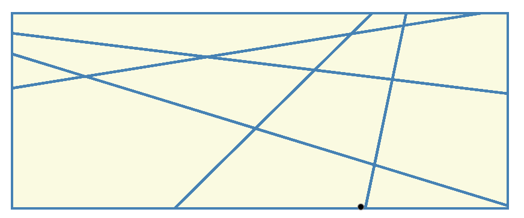

一些算法
namespace: algorithm
OnePiece也实现了一些其他的算法，这部分内容比较杂乱，总之是作者平时学习有用到的东西。之后example中可以看到，这些东西可以做一些神奇的事情。
Clutering.h
Clutering.h中实现了三种聚类方法：KMeans（基于OpenCV）， MeansShift，KMediods。
//基于OpenCV实现的KMmeans聚类
template <int T >
void KMeansClustering(const std::vector<Eigen::Matrix<geometry::scalar,T,1>,
Eigen::aligned_allocator<Eigen::Matrix<geometry::scalar,T,1>> > & wait_to_cluster, std::vector<Cluster<T>> &clustering_result, int K);
//MeansShift聚类
template <int T >
void MeansShiftClustering(const std::vector<Eigen::Matrix<geometry::scalar,T,1>,
Eigen::aligned_allocator<Eigen::Matrix<geometry::scalar,T,1>> > & wait_to_cluster, std::vector<Cluster<T>> &clustering_result, float radius);
//KMedoids聚类
template <int T >
void KMedoidsClustering(const std::vector<Eigen::Matrix<geometry::scalar,T,1>,
Eigen::aligned_allocator<Eigen::Matrix<geometry::scalar,T,1>> > & wait_to_cluster, std::vector<Cluster<T>> &clustering_result, int target_number, bool initialized = false, const std::vector<int> & initialized_index = std::vector<int>());
//上面三种聚类，需要在写程序时候确定聚类的对象的向量维度
//这个维度是可以根据程序运行结果动态设定的，用到了Eigen的Dynamic Matrix
void KMedoidsClusteringDynamic(const geometry::PointXList & wait_to_cluster,
std::vector<ClusterDynamic> &clustering_result, int target_number, bool initialized = false,
const std::vector<int> & initialized_index = std::vector<int>());
PatchDetection.h
PatchDetection.h中主要是用来在一组点中检测直线(二维点)或者平面（三维点）。
void LineDetection(const geometry::Point2List &points,
std::vector<LinePatch> &results);
void PlaneDetection(const geometry::Point3List &points,
std::vector<PlanePatch> &Patches);
DCEL.h
DCEL.h实现了Doubly Connected Edge List，是计算几何非常基础的一个数据结构，主要用来描述Line Arrangements（又叫Cell Complex）。也就是在一个平面上有很多直线相交后，组成一些网格，这些网格就像是细胞一样（Cell）。用DCEL来描述的话，可以随意向其中添加直线（或者抽取某条直线，很少用到），也能很容易找到某条直线经过的网格，也能很容易定位任意给定的点在哪个网格中，总之非常强大。

DCEL类主要有下面两个成员函数：
//添加直线
void IncrementLine(const geometry::Line &line);
//抽去某条线（未经过足够的测试来保证正确性）
void ReductLine(int line_id);
看起来很简单，但是实际上背后的实现还是非常复杂的。
Arrangements.h
Arrangements.h用来辅助DCEL的建立，可以用来求多条直线的交点，从而确定DCEL的boundingbox有多大。
关于Line Arragements可以在这个网站看在线的Demo：Line Arrangements
使用Algorithm下的内容，可以实现一个简单的房间检测功能。